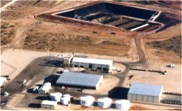

The Main Chapters of this Online Resource:

Historical Overview Of Texas Nuclear Power Plants Both Comanche Peak and South Texas Project plants not only have a long history of accidents, internal corruption, and harassment of staff who raise safety concerns, but also problems which revealed a subculture of corruption at the Nuclear Regulatory Commission. Cost overruns in tens of billions of dollars for each plant has forced the rates of City utility partners to skyrocket. MORE >>>> |
The Legacy Of South Texas Uranium Mining Between 1955 and 1995, companies drilled throughout South Texas extracting uranium. These vast activities have greatly increased the groundwater concentrations of toxic material. Although the DOE has been "remediating" a few of the dozens of these sites, they have openly declared cleanup of the aquifers impossible due to the massive contamination. MORE >>>> |
|
The Sustainable Alternatives to Nuclear Power: Wind, Solar, and Fuel Cells Texas is already a world leader in producing energy from wind power, with 1,103 megawatts capacity. Developing more wind farms and installing the wiring to deliver this kind of power to major cities can free our state from nuclear power. The clean alternatives to nuclear power are not only environmentally responsible, but also exponentially less expensive and provide a means of upgrading from the bloated outdated technology of the nuclear fuel cycle to move into the 21st century. MORE >>>> |
Nuclear Power Air Pollution: Large Percentages of Carbon Dioxide and Ozone Depleting CFC Emissions 88% of US CFC emissions result from uranium enrichment in addition to 1,300,000 tons in CO2 emissions per year per nuclear plant during uranium mining and plant construction. Reprocessing spent fuel is cost-prohibitive, and use of plutonium or mixed oxide (MOx) fuel in reactors has not only proved to be extremely dangerous, but is also seen to encourage the proliferation of plutonium. MORE >>>> |
|
History Of Texas Waste Dumps The earliest waste dumps in Texas were located at two uranium mills: Conoco's Conquista and Chevron's Panna Maria. The University of Texas System later built it's own warehouse at Ft Stockton for it's waste. In the 1980's, the formation of the Texas Low-level Radioactive Waste Disposal Authority set in motion a search for a disposal site which was consistently met with citizen opposition: 1983-'84 Hudspeth County in Dell City, in 1985-'87 in McMullen County, in 1987-'91 in Ft Hancock, and in 1991-'98 in Sierra Blanca. Texas joined theTexas Compact as host state to dispose of waste from Maine and Vermont. Sierra Blanca was to be the disposal facility for the compact prior to international opposition from the Mexican government. Another compact dump has not been sited, but is considered for placement at WCS in Andrews County. MORE >>>> |
 Waste Control Specialists Low-Level Waste Facility In Andrews, Tx Waste Control Specialist LLC owns a low-level radioactive waste processing and storage facility which has dumped several hundred thousand cubic feet of "exempted" low-level waste into an onsite hazardous waste landfill. It resides on the Ogallala aquifer, is near seismic activity, and has a floodplain running through the facility. WCS's goal is to obtain a disposal license and become a full DOE disposal contractor, but Texas law currently requires that only a state agency be granted a full disposal license. WCS sells the Andrews dump primarily by enticing DOD and DOE offices that obtaining an exemption on waste and disposing of it at Andrews is cheaper than disposing at a licensed low-level waste dump. Diluting waste to qualify for an exemption is not uncommon. Surprisingly, regulators are not maintaining any inventory or data on the exempted low-level waste dumped at Andrews. MORE >>>> |
|
The Gamble of Assured Isolation: Differing Disposition and Playing With Garbage Assured isolation is a plan for a deregulated waste dump- with a public relations twist. Since placing a nuclear waste dumps in our State has received such opposition, lawmakers are employing a concept touted as an alternative, yet which reveals itself as a means to evade public criticism by simply postponing calling the place a disposal site. This proposal also makes claims that environmental monitoring and siting criteria should be weakened due to the presence of radiation counters and cameras inside of the building. Not only is there no clear definition of assured isolation by federal authorities, but the same federal authorities have announced that they do not endorse the idea. Our overview includes a top-10 list on why this idea stinks. MORE >>>> |
The Texas Compact: Leftover Contract from a Broken System The Texas Compact is an agreement ratified by US Congress which dictates that Texas should be responsible for disposing of waste from Maine and Vermont. Since Texas has not yet built a dump for this purpose, the preliminary motions which financially obligate Texas to do so have not yet occurred. Several similar state compacts have dissolved and the compact system has been determined to be a failure by chairpersons of the NRC and others. The Texas Compact must be renewed by the US Congress this year, and Maine already voted to drop out of the agreement. Texas can still say no, and save itself from the imposed penalties which are promised by the agreement. Will lawmakers stand up and say no? MORE >>>> |
|
National "Low-Level" RadWaste Dumps: Every Single One Has Leaked From Maxey Flats to Barnwell to Envirocare's site in Utah, every single "low-level" waste dump ever built has leaked. This is a short overview of some of these dumps, and provides a glimpse of what's in store for us if we allow a dump to be built. We are told that an assured isolation site won't leak, but it has never been attempted. Texas has a long history, illustrated in the mining sections, of coping with the problems of radioactive contaminants in our groundwater. If a Texas waste dump is built, whether called "assured isolation" or not, it will likely remind us that the lessons of the past are valuable wisdom to be respected. What is the meaning of national security if we allow our groundwater to be contaminated? MORE >>>> |
Dump for Texas Waste is Unjustified. Comparing DOE, Compact, and Texas Amounts Out of 64 existing Texas radioactive material licenses, 45 generate waste and 52 store waste. Nearly 80% of waste stored is brought in from outside the State by WCS in Andrews, and 96% of the waste generated comes from the 2 nuclear power plants. Waste from other sources generally decay rapidly and are never destined for a licensed radioactive waste dump. The US Dept of Energy amounts are exponentially larger- for the decade of 2000-2010, the DOE says it will have 249 million cubic feet for disposal- a whopping 92 times the 35-year total from the Texas Compact and 441 times a 10-year estimate of waste from Texas! WCS lobbys hard to be a disposal site for DOE waste, and says they won't profit enough from waste from just the Texas Compact- this shows the risk involved. MORE >>>> |
|
Texas High-Level Waste Issues: Transports To Yucca Mountain By now everybody has heard of the plan to dispose of high-level waste including spent fuel at Yucca Mountain. By the DOE's plan, more spent fuel will be sitting at our power plants when Yucca Mountain is closed than is currently stored. Trucks with out-of-state high-level waste shipments will be coming through Texas over I-20, I-40, and I-35, and as accident projections appear grim, concern is coupled with vulnerability of the shipments to terrorist attack. MORE >>>> |
WIPP: Transuranic Waste Shipped Through Texas To Be Dumped Underground in Carlsbad Waste Isolation Pilot Project near Carlsbad is a DOE facility to actually dispose of transuranic waste deep underground in unshielded carved rooms underneath an aquifer which feeds the Pecos River. Below this dump are pressurized saltwater lakes which threaten to flood the storage rooms and corrode the 55-gallon drums. Amazingly, it has been considered the alternate location for the high-level waste dump sited at Yucca Mountain. This waste comes through Texas on I-20. MORE >>>> |
|
Radiation Basics: Fission! Links Between Nuclear Plants and Weapons Both nuclear bombs and plants make use of nuclear fission. Fission products come back to haunt us in form of radioactive fallout and radioactive waste. What are the different types of reactors? What is the nuclear fuel cycle? How is plutonium produced? MORE >>>> |
 Pantex Nuclear Weapons Plant: Assembly, Disassembly, and Plutonium Storage Pantex has served as the assembly plant for the entire US nuclear weapons stockpile since the beginning of the Cold War. All components of the weapons were brought to Pantex and bombs were shipped out to either the silos or the test sites. When the Cold War was over, Pantex's mission was switched to that of dismantelling of weapons and the storage of surplus plutonium. This, however, is changing as the Bush administration has presented plans to build more bombs, and in addition, produce more plutonium and tritium for this new nuclear weapons buildup. MORE >>>> |
|
Radiation Basics: Halflives, Decay Types, and Common Isotopes An overview of the physical properties of radiation. Explains halflives, nuclear fission, the different types of radiation and decay, and describes various radioisotopes found in radioactive waste in detail. MORE >>>> |
Radiation and Health: Living Cells and Radioisotopes An overview of medical issues concerning radiation. Which organs are most sensitive? What is an average yearly dose of radiation? How does radiation affect our bodies and our cells? How is our DNA tampered with by radiation? Is there a safe low-dose? How do radioactive materials reach people? MORE >>>> |